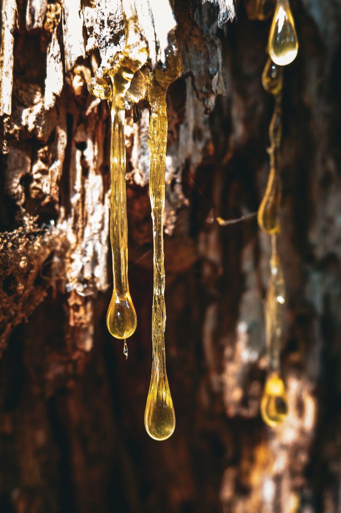

Home / Scent School
The FRAGNIVO Scent School
Everything you need to choose and wear a fragrance, in plain language.
What is a decant?
A decant is a smaller amount of fragrance transferred from the original bottle into a separate spray atomiser. A 10 ml decant lets you wear a scent over several days and see how it suits you.
Same scent. Smaller format.
Why try a decant?
A fragrance can smell different on a testing strip, on your skin and after a few hours. A decant gives you time.
- Test the scent Wear it before choosing a full bottle.
- Explore more Try several fragrances in a smaller size.
- Take it along It fits easily in a bag or on your travels.
EDP vs EDT
Eau de Parfum
Usually a higher concentration of fragrance materials.
Eau de Toilette
Typically a lighter concentration, though formulas vary.
Concentration alone cannot tell you how long a fragrance will last on your skin. Skin, ingredients, weather and how you apply it all play a part.
How a scent unfolds
- Top notes
- The first impression after spraying.
- Heart notes
- The main character as it develops.
- Base notes
- The impression that remains later.
These stages overlap and every perfume develops differently, so give a fragrance time to settle before you decide.
Find your scent family
Families overlap, and you may enjoy more than one.
 FreshClean, airy, citrus
FreshClean, airy, citrus FloralPetals, delicate, soft
FloralPetals, delicate, soft WoodyDry, earthy, warm
WoodyDry, earthy, warm
AmberWarm, resinous, rich
How to test a perfume
- Spray on skin Start with one fragrance on clean skin.
- Let it develop Notice how the scent changes as it settles.
- Check again later Return to it after an hour or two.
Test a few at a time, because too many scents become hard to tell apart.
How to apply perfume
- Start light Use a small amount, then adjust to taste.
- Spray on clean skin Choose comfortable areas such as wrists or neck.
- Let it dry Avoid rubbing the sprayed area.
- Reapply if needed Performance varies from fragrance to fragrance.
If your skin is sensitive, test a small area first.
How to store perfume
Heat, strong light and repeated temperature changes can affect a fragrance over time. Keep bottles in a cool, dry place away from direct sunlight, and close them properly after use. A bedroom drawer or cupboard is often better than a steamy bathroom or sunny windowsill.
Find your signature scent
Start with the styles you already like, try them on your skin, and notice how they feel during an ordinary day. A scent that suits your routine is often a better choice than one you buy only because it is popular.